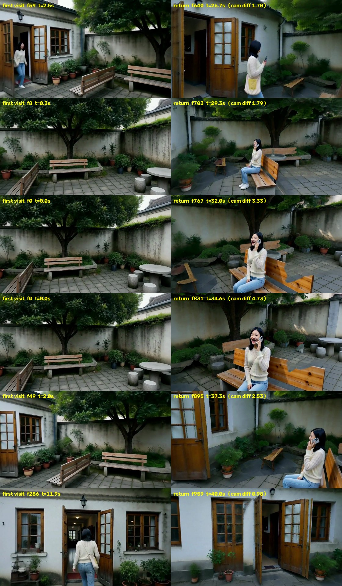
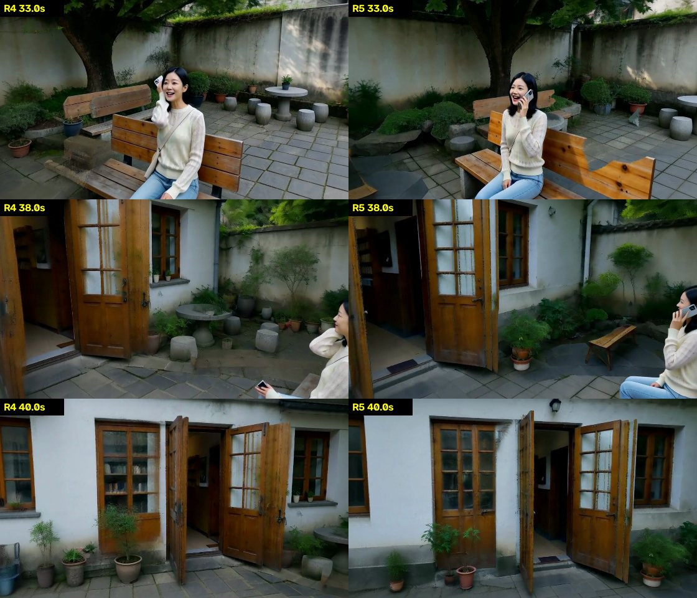
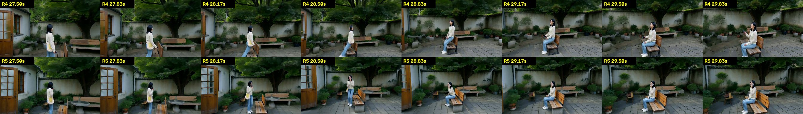

一镜到底：从一段剧本到分钟级、带对白的连续镜头
研究概览 · 更新于 2026-10-28 晚 · 本页只写当前方法（场景记忆 v5）和最新结果 R5 · 逐镜头白模和深度见
Story World 查看器任务
输入：一段剧本，粗糙的也可以，由规划器补全。可选：参考动作视频、人物照片、参考声音。
输出：分钟级、中间不剪辑的一条连续镜头，写实，带对白和环境声。相机可以穿门过廊，也能回到之前去过的地方。
难点：视频模型一次最多生成约 15 秒，只能分段生成再无缝接上；回到老地方时，场景、人、声音都要和之前一样；人不穿家具；动作要符合剧本或参考动作。
方法：一个世界状态，每段做三件事
世界状态 = 白模（3D 布局、人物去哪、相机怎么走）+ 三种记忆（场景长什么样、人长什么样、声音是什么样）。
开拍前：大模型把剧本写成白模和剧情节拍 → 按剧情切段（交接放在镜头和人都闲的时候，每段长短不一）→ Blender 渲染白模 → 大模型按节拍写每段的 prompt。
每一段：① 从世界状态渲染条件：深度、场景记忆、人物参考图、音色、动作参考 → ② H3 生成一次（4 张卡）→ ③ 登记回世界：画出来的场景贴回 3D，人抠出来存进人物记忆，台词存进声音记忆，同时检查人数、身份、台词，不合格就换种子重来。
各模块都是这三步里的一部分：场景记忆、人物记忆、声音记忆都是“登记回世界”的不同对象；深度、记忆画面、参考图都是“从世界渲染条件”的不同输出。思路来自 CoDeR（通义，2609.26458）的“观测登记回世界”，我们把它从场景推广到了人和声音，并且不需要训练。
| 条件 | 怎么来 | 作用于哪几步（共 8 步） |
|---|
| 场景深度 | 看过的地方用记忆里的几何，没看过的用白模 | 全部 8 步 |
| 人的深度 | 前 2 步用真人体（SMPL-X），定位置、朝向、大致姿势；之后换成只表示占位的人形，动作细节和手机这类小道具交给 H3 | 真人体 1–2，占位人形 3–8 |
| 场景记忆（硬抄） | 只在几何可靠的地方照抄，见下一节 | 全部 8 步 |
| 场景记忆（软约束） | 其余看过的地方：每步之后把潜变量拉回“加了相应噪声的记忆”，最后 2 步放开让模型重画细节 | 1–6 |
| 动作参考（搭档的方法） | 参考视频和我们的镜头视角不同：先恢复成 3D，从我们的机位渲染成灰模，再让 H3 同时看原视频和灰模生成参考视频 | 预处理里：灰模 1–6，原视频 3–8 |
| 人物参考图、音色 | 从人物记忆里按这一段会出现的角度挑 2–3 张；音色取这个人说过的第一句 | 全部 8 步 |
场景记忆 v5：怎么做到“回来还是原样”
记什么（每段生成完）
- 取约 60 张关键帧，用 Depth Anything V2 估出每个像素多远，变成带颜色的 3D 点；人和她的包用 SAM3 抠掉。
- 贴回白模：估出的深度和白模相差不到 8% 的地方（墙、地面、门所在的那面墙），直接用白模的精确几何。这些表面从任何角度看位置都完全一致，所以换个角度照抄也不会拉坏。测下来，关键帧里约一半的像素能贴回白模。
- 和白模对不上的（家具、树冠、植物、敞开的门扇）用估出来的深度；从几乎平行于表面的角度看到的像素不存。
怎么用（下一段的每一帧）
- 以最近一次看到的为准：同一处被两段都看到过时，用较新的那段；一致性检查只在同一段的画面之间做。这样回来时看到的就是刚才离开时的样子。
- 硬抄：贴在白模上的表面，看的方向差 45° 以内、放大不到 1.6 倍就照抄；其他表面只在几乎同一视角（12° 以内）照抄。按模型的 32 像素格子整理时，一格里一半以上可靠就整格照抄，格里的小洞用记忆颜色补，不再出现灰块。
- 软约束：其余看过的地方只在前 6 步约束颜色和布局，最后 2 步让模型重画细节，所以不会有方块和拉伸。
- 人身边按白模：她要坐的长椅这类地方，深度用白模加人体，不抄记忆，所以不会穿模，也不会凭空冒出小凳子。
人物与动作：规划只管“在哪、什么时候、朝哪”
- 动作不再由白模定死：真人体只在前 2 步出现，决定她在哪、朝向、大致姿势；之后换成占位人形，走路、坐下、打电话的细节交给 H3。手机不画进深度图，由 H3 按 prompt 画出来。
- 规划里的动作要合理：R4 里她一边往前走一边 1 秒内转身坐下，所以是“滑”上长椅的。现在改成先走到长椅前停下，转身，再往后坐到长椅正中。
- 人物记忆：开拍前生成角色原地转一圈的定妆视频，放进 8 个视角格（前/左/后/右 × 全身/近景）；每段生成后把她抠出来按角度补进去（DINOv2 检查像不像，不像的不进）；下一段按会出现的角度挑 2–3 张做参考图。
最新结果：后院 → 屋里 → 后院（R5，40 秒一镜到底）
小雨在后院跳一小段街舞（动作参考），回屋进工作间拿手机看，再走回院子，在长椅前转身坐下给妈妈打电话，镜头最后转回后门。按剧情切成 3 段：0–15.1 秒、13.6–27.3 秒、25.7–40 秒。
成片 R5：3 段接成一条，带对白和环境声。

第一次来（左）和回来后（右）：后门、两扇窗、门上的壁灯、院墙、大树、树前长椅、她坐的长椅位置都对得上。还会变的是家具和植物这类和白模对不上的小东西：石桌那块变成一个石台，地上多了一把小木椅。

R4（左）和 R5（右）同一时刻：33 秒，R4 的靠背画在她身前，R5 在她身后；38 秒和 40 秒回看后门，R5 保住了第一次来时门左边的窗格和门上的壁灯，R4 变成了能看到书架的玻璃窗、壁灯也没了。

坐下的过程（每张间隔 1/3 秒）：上排 R4，她边走边转身，滑上长椅；下排 R5，先走到长椅前停下，转身面向镜头，再坐下。
速度与自动化
| 环节（每段） | R4 | R5 | 做了什么 |
|---|
| 渲染场景记忆 | 14–16 分钟 | 5.5–6 分钟 | 各帧互不依赖，改成 8 线程并行（多进程 fork 会死锁，改用线程） |
| 生成（含编解码） | 14–15 分钟 | 12–13 分钟 | VAE 编码、解码分摊到 4 张卡（原来 4 张卡各自重复编码同一段视频） |
| 整条 40 秒 | 118.5 分钟 | 92.5 分钟 | 其中去噪本身约 7 分钟/段，其余是加载、预处理和每段之间的检查和记录 |
已经自动化
- 按剧情切段（plan_cuts.py）：交接避开坐下、跳舞、台词。
- 每段的 prompt 由大模型按剧情节拍自动写（author.py prompts），并自动检查时间点和占位符。
- 动作参考预处理、记忆渲染、检查、记忆入库、拼接都在一条调度里自动跑。
下一步提速 / 自动化
- 每段之间还有约 15 分钟：SAM3 只算关键帧并分到 4 张卡上；记忆渲染和人物入库同时跑。
- H3 常驻显存，不再每段重新加载（每段省约 1.5 分钟）。
- 人体动作参数（跳舞时段、打电话手势）改为从规划里读，不再手填。
- 整个循环挪到服务器上跑，Mac 只负责一开始的规划和白模渲染。
现在的问题
- 家具和植物还会变：和白模对不上的东西只有软约束，样子会被重画（石桌变石台、多出小木椅）。办法是把画出来的家具写回白模，变成“贴在白模上”的表面。
- 小瑕疵：回看后门时右边门扇边缘有一道重影；坐下后长椅靠背右端有锯齿；她还在走路时就把手机举到了耳边，比 prompt 写的早。
- 脸：全身镜头里脸只有几十个像素，转头会糊。
- 速度：40 秒要 1.5 小时，主要花在每段之间的检查和记录、模型加载，见上一节。